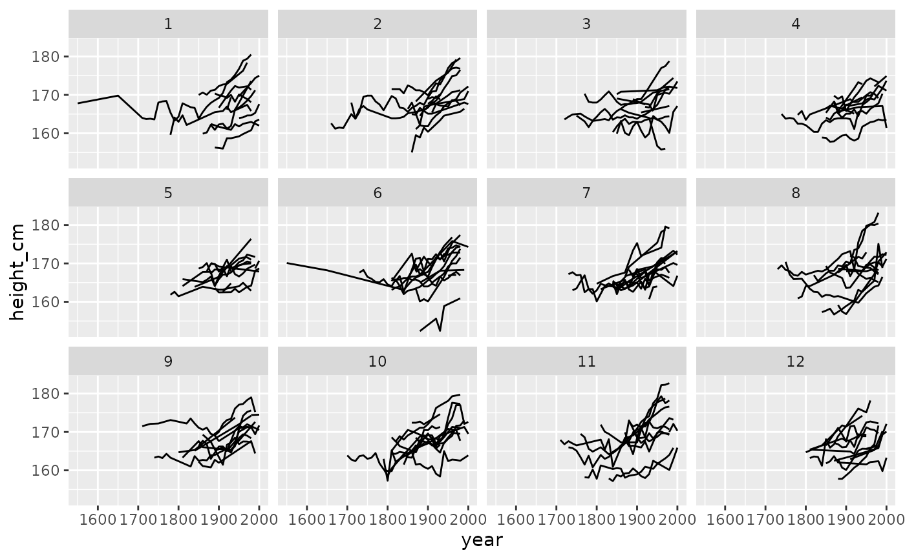
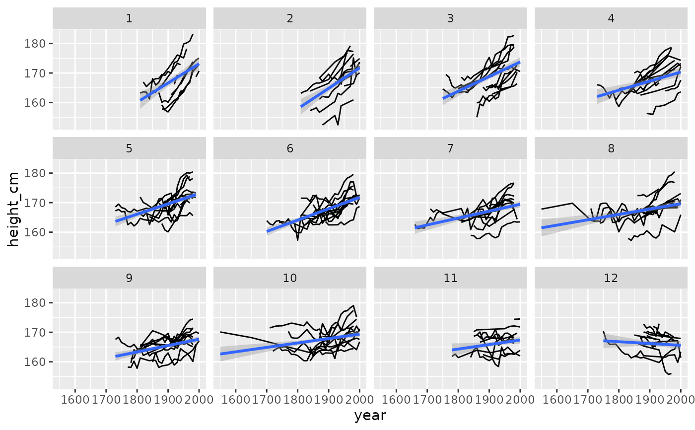

This function requires a tbl_ts object, which can be created with
tsibble::as_tsibble(). Under the hood, facet_strata is powered by
stratify_keys().
Usage
facet_strata(
n_strata = 12,
along = NULL,
fun = mean,
nrow = NULL,
ncol = NULL,
scales = "fixed",
shrink = TRUE,
strip.position = "top"
)Arguments
- n_strata
number of groups to create
- along
variable to stratify along. This groups by each
keyand then takes a summary statistic (by default, the mean). It then arranges by the mean value for eachkeyand assigns then_stratagroups.- fun
summary function. Default is mean.
- nrow, ncol
Number of rows and columns.
- scales
Should scales be fixed (
"fixed", the default), free ("free"), or free in one dimension ("free_x","free_y")?- shrink
If
TRUE, will shrink scales to fit output of statistics, not raw data. IfFALSE, will be range of raw data before statistical summary.- strip.position
By default, the labels are displayed on the top of the plot. Using
strip.positionit is possible to place the labels on either of the four sides by settingstrip.position = c("top", "bottom", "left", "right")
Examples
library(ggplot2)
ggplot(heights,
aes(x = year,
y = height_cm,
group = country)) +
geom_line() +
facet_strata()

ggplot(heights,
aes(x = year,
y = height_cm,
group = country)) +
geom_line() +
facet_wrap(~continent)
ggplot(heights,
aes(x = year,
y = height_cm,
group = country)) +
geom_line() +
facet_strata(along = year)
# \donttest{
library(dplyr)
heights %>%
key_slope(height_cm ~ year) %>%
right_join(heights, ., by = "country") %>%
ggplot(aes(x = year,
y = height_cm)) +
geom_line(aes(group = country)) +
geom_smooth(method = "lm") +
facet_strata(along = .slope_year)
#> `geom_smooth()` using formula = 'y ~ x'

# }